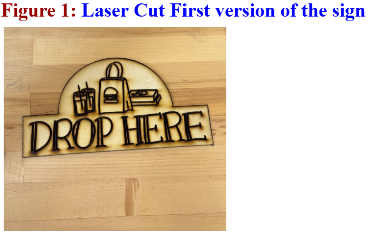
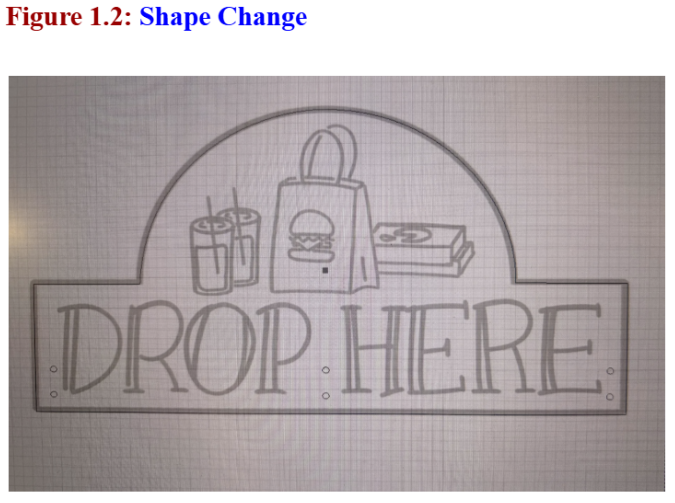
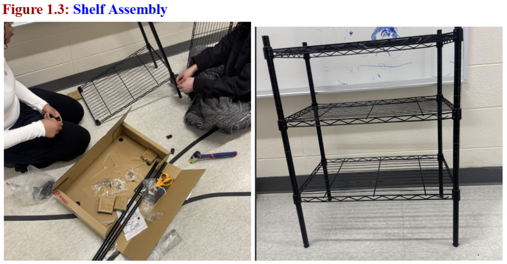
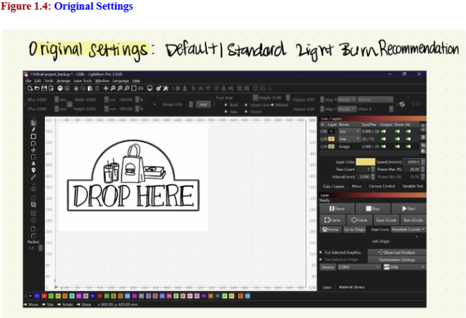
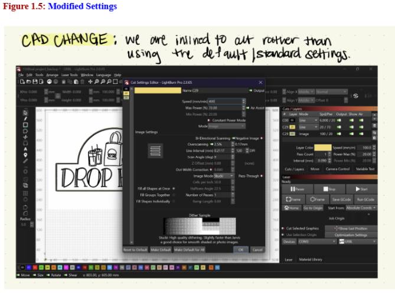
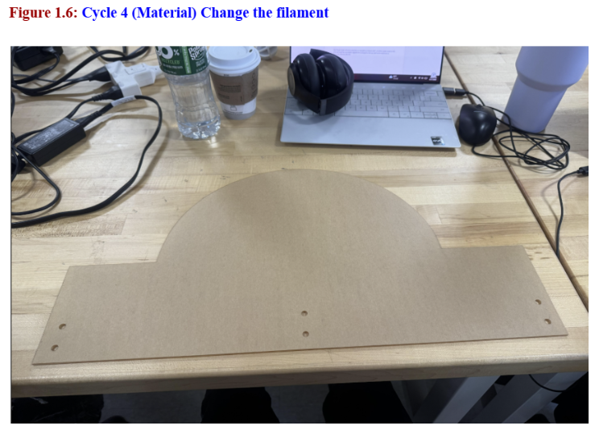

The first (Cycle 1) design was produced through lasercutting plywood with the use of the LightBurn software. This first design was a test of scale and ease of attachment to the Amazon shelfing. We qualitatively investigated visibility distance (measured in feet) and tactile recognition (measured in time). We found that the sign could be read from 3.5 feet away in low light, and could not reliably be recognizaed by touch, as the tactile indicators weren't adequately pronounced. For the second cycle, we focused on improving tactile indication.
The Good: The sign looked great and fit the shelf perfectly.
The Bad: The tactile bumps were a little too flat. It took way too long to "read" the sign with just our hands because the plastic was too smooth.
The Pivot: For Cycle 2, we're going back into CAD to make those tactile icons much taller and sharper so they're easier to feel.

For our second version, we shifted from the flat laser-cut baseline to a more functional assembly to solve the mounting and usability issues we found in Cycle 1. We also played around with the shape to make something newer. The original laser-cut sign didn't have a secure way to attach to the Amazon shelf (which we also built during this cycle), and the flat surface didn't provide enough tactile feedback for someone to "read" the icons by hand.
Cad Changes:
Zip Tie Integration: We added specific mounting holes directly into the CAD design. This allows us to use zip ties to lock the sign onto the shelf bars, making it much more stable so it doesn't wiggle or fall off when a student or delivery driver touches it.
Tactile Pop: We redesigned the icons and text to have significant depth. This makes the sign much easier to identify through touch alone, meeting our design principle for tactility.
Material Shift: We moved away from a single flat piece to this layered assembly to increase the overall durability and visual contrast of the hub.
Testing & Results: We used our consistent testing methodology to see if these physical changes actually moved the needle on our success criteria.
Visibility Distance: Our detection distance jumped from 3.5 feet (Cycle 1) to 5.5 feet since we added some visual contrast.
Tactile Recognition Time: Adding that physical depth made a huge difference. In our usability tests, the time it took to identify the "Delivery Hub" icon by hand was cut in half compared to the flat Cycle 1 version.
Mounting Success: The new zip-tie holes successfully secured the sign at the required waist-height (between 15 and 48 inches), ensuring the hub stays accessible and in place for every delivery.


In Cycle 3, we kept our CAD design from Cycle 2 the same but focused entirely on our CAM settings within LightBurn. Our goal was to refine the surface of the sign to make the tactile elements more professional and easier to identify by touch. See Figure 1.4 and Figure 1.5
The Key CAM Changes: Switch to Engraving Mode: Instead of just cutting out shapes, we utilized the engraving feature in LightBurn. This allowed us to "etch" the food icons and "DROP HERE" text directly into the material with varying depths.
Scan Parameter Adjustments: We adjusted the Line Interval and DPI settings in the Cut Settings Editor to create a smoother, more consistent finish. By using a high-quality dithering mode like Stucki, we ensured the transition between the engraved icons and the base board was sharp and distinct.
Precision Power Control: We fine-tuned the laser's Max and Min Power settings to ensure the engraving was deep enough to be felt without scorching the acrylic base.
Testing & Results: Using our consistent quantitative methodology, we measured how these machine-level changes affected the sign's performance.
Tactile Recognition Time: The switch to engraving was a game-changer for usability. Because the engraved surface has a consistent, slightly "toothed" texture compared to the smooth plastic stickers from Cycle 2, users were able to identify the icons by touch significantly faster.
Visibility Distance: The engraving added a layer of visual "matte" finish to the icons, which reduced glare in the 6:00 PM – 9:00 PM "critical window". This pushed our visibility distance from 5.5 feet to 6.2 feet.
Durability: Unlike the stickers used in Cycle 2, which could peel off over time, the engraved design is a permanent part of the board, ensuring the hub remains accessible for the long term.


For our final iteration, we made the biggest change yet by switching our base material from wood to acrylic. While the wood in Cycle 3 was great for testing our engraving settings, it didn't provide the professional look or the high-contrast visibility we needed for a campus delivery hub. See Figure 1.6.
The Key Material Changes:Wood to Acrylic: We moved away from the wooden base and used a thick acrylic board. This change makes the sign weather-resistant for campus use and gives it a much cleaner, more modern look.
High-Contrast Layering: By combining the acrylic with our design overlays, we achieved the 70% color contrast required by our design principles.
Light Refraction: The acrylic base catches ambient light much better than wood, which is a huge help during the 6:00 PM – 9:00 PM "critical window" when visibility is lowest..
Testing & Results (Final Score): We ran our final round of quantitative tests to see how the material change impacted our success criteria.
Visibility Distance: This was our biggest win. The contrast of the green on acrylic allowed our testers to identify the "Drop Here" sign from 9 feet away. This is a massive jump from our 3.5-foot baseline in Cycle 1, easily beating our goal of a 50% increase.
Tactile Recognition Time: The engraved acrylic felt even "sharper" than the engraved wood, allowing users to identify the food icons by touch in record time.
Durability: The acrylic is much tougher and won't warp or degrade if it gets hit by rain or snow, making it a "repair the world" solution that will actually last on campus.
Final Conclusion: Moving from a flat laser-cut sign to an engraved acrylic hub, we successfully created a tool that makes deliveries accessible for everyone.

Our Dozuki Guide will not be about how to "assemble an Amazon shelf". It will be a guide on how to 3D print and install the accessibility upgrade kit we designed so that any shelf can be turned into an Accessible Delivery Hub.